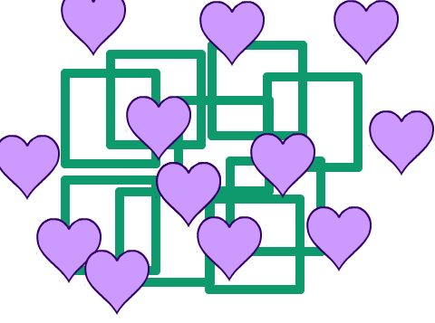
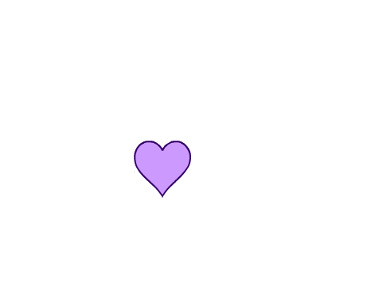
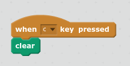
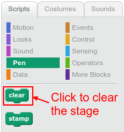

The clear {.blockpen} block clears the Scratch stage of lines and stamps created using pen or stamp blocks.

After clearing the stage, you will just see the backdrop with any sprites that are not hidden:

You can use clear{:class="blockpen"} in a script:

You can also just click on clear{:class="blockpen"} in the palette without dragging the block onto the stage:
